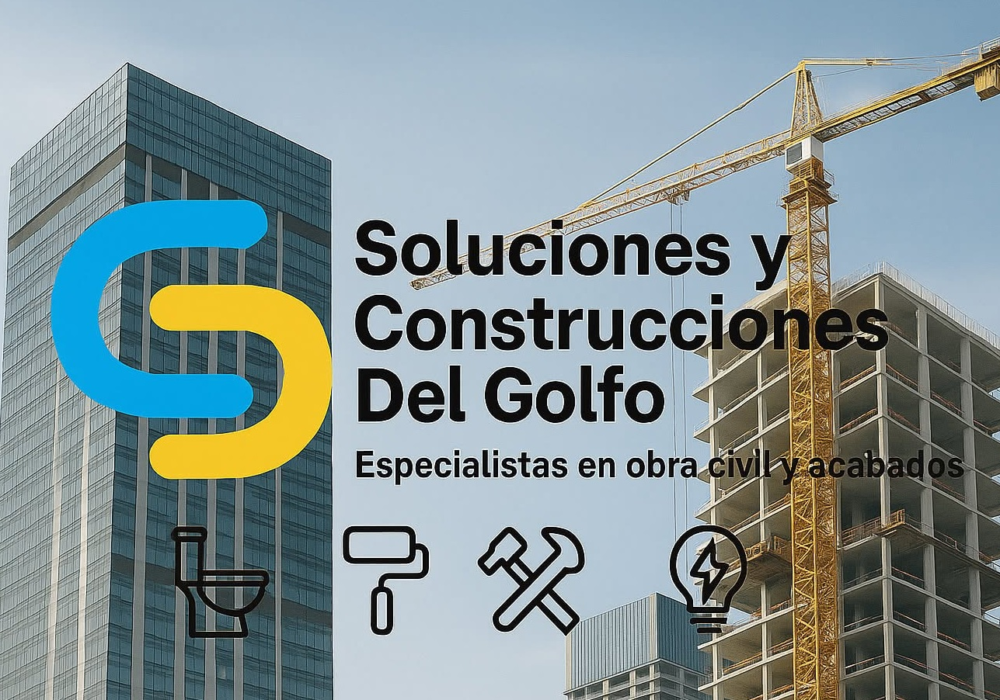

Bienvenido a CSG

Abierto todos los dias de 8:00 AM a 8:00 PM
Soluciones de especialidad
Una empresa de construcción es una organización dedicada a la planeación, ejecución y supervisión de proyectos de infraestructura y edificaciones, como viviendas, oficinas, instalaciones industriales y obras públicas..
Soluciones y Construcciones del Golfo
El Origen

Nosotros
"SCG" Significa Soluciones y Construcciones del Golfo. La empresa inició sus actividades enfocándose en la ejecución de obras civiles, especializándose principalmente en la construcción de losas para proyectos habitacionales, comerciales e industriales. Gracias a la calidad de sus trabajos, el cumplimiento de los tiempos de entrega y el compromiso con sus clientes, logró consolidarse y ganar experiencia en el sector de la construcción..
Alcanzes

Colado de losas de cimentación, entrepisos y azoteas
$10,000
Las losas son elementos estructurales horizontales utilizados en la
construcción para formar pisos y techos de una edificación. Su
función principal es soportar y distribuir las cargas hacia vigas,
columnas o muros, proporcionando estabilidad y resistencia a la
estructura.
Generalmente, las losas se construyen con concreto reforzado y acero
de refuerzo, aunque también pueden emplearse otros materiales
dependiendo de las necesidades del proyecto. Existen diferentes
tipos de losas, como las macizas, aligeradas, reticulares y
prefabricadas, cada una diseñada para cumplir con requerimientos
específicos de carga, espacio y costo.
La correcta ejecución de
una losa es fundamental para garantizar la seguridad, durabilidad y
buen desempeño de cualquier obra civil
Movimiento de tierras y nivelación de terrenos
$50,000
El movimiento de tierras y la nivelación de terrenos son actividades
fundamentales en cualquier proyecto de obra civil. Consisten en
preparar el terreno mediante la excavación, relleno, corte,
compactación y distribución del suelo, con el propósito de obtener
una superficie estable, uniforme y adecuada para la construcción.
Estos trabajos permiten garantizar que las cimentaciones y demás
elementos estructurales se desarrollen sobre una base segura,
reduciendo riesgos de asentamientos, inundaciones o fallas en la
estructura. Para su ejecución se emplea maquinaria especializada,
como excavadoras, retroexcavadoras, motoconformadoras, compactadores
y niveladoras, siguiendo las especificaciones técnicas y los
estudios del terreno.
Una correcta preparación del terreno es esencial para asegurar la
calidad, estabilidad y durabilidad de cualquier obra de
infraestructura o edificación.
Excavaciones para cimentaciones y obras especiales
$80,000
Las excavaciones para cimentaciones y obras especiales consisten en
la remoción controlada de tierra, roca u otros materiales del
terreno para crear el espacio necesario donde se construirán las
bases de una estructura o elementos específicos de un proyecto.
Estas actividades se realizan de acuerdo con los planos y
especificaciones técnicas, garantizando las dimensiones, profundidad
y estabilidad requeridas.
Este proceso es fundamental para
asegurar que las cimentaciones transmitan adecuadamente las cargas
de la construcción al terreno, proporcionando seguridad y
estabilidad a la obra. Asimismo, las excavaciones especiales pueden
destinarse a la instalación de cisternas, registros, drenajes,
sótanos, muros de contención, fosas, canalizaciones y otras
estructuras que requieran trabajos a diferentes profundidades.
La
ejecución de estas actividades se lleva a cabo utilizando maquinaria
especializada y, cuando es necesario, métodos manuales, siempre
cumpliendo con las normas de seguridad, protección del personal y
cuidado del entorno.
Construcción de cimentaciones y zapatas
$40,000
La construcción de cimentaciones y zapatas comprende la ejecución de
los elementos estructurales que sirven de base para soportar y
transmitir las cargas de una edificación hacia el terreno de manera
segura. Estos trabajos incluyen el trazo, excavación, colocación de
acero de refuerzo, instalación de cimbra, colado de concreto y
curado, siguiendo los planos estructurales y las especificaciones
técnicas del proyecto.
Las zapatas son uno de los tipos de cimentación más utilizados en
edificaciones y pueden ser aisladas, corridas o combinadas,
dependiendo de las características del suelo y de las cargas que
deberá soportar la estructura. Una cimentación correctamente
construida garantiza la estabilidad, resistencia y durabilidad de la
obra, minimizando el riesgo de asentamientos o fallas
estructurales.
Todos los trabajos se realizan cumpliendo con
las normas de calidad, seguridad y construcción aplicables,
utilizando materiales certificados y procedimientos que aseguran un
desempeño confiable de la estructura.
Impermeabilización de azoteas y superficies
$5,000
La impermeabilización de azoteas y superficies consiste en la
aplicación de sistemas y materiales especializados que impiden el
paso del agua y la humedad hacia el interior de las estructuras. Su
principal objetivo es proteger las edificaciones contra
filtraciones, prolongar la vida útil de los elementos constructivos
y reducir los costos de mantenimiento.
Este servicio incluye la
preparación de la superficie, reparación de grietas o fisuras,
limpieza del área y la aplicación del sistema impermeabilizante más
adecuado, de acuerdo con las condiciones de la obra y las
necesidades del cliente. Los trabajos pueden realizarse en azoteas,
terrazas, cubiertas, muros, cimentaciones y otras superficies
expuestas a la intemperie.
La correcta impermeabilización
contribuye a preservar la integridad estructural de la construcción,
evitando daños ocasionados por la humedad, como desprendimiento de
acabados, corrosión del acero de refuerzo y formación de moho.
Instalacion de paneles solares
$100,000
La instalación de paneles solares consiste en el diseño, suministro,
montaje y puesta en marcha de sistemas fotovoltaicos para el
aprovechamiento de la energía solar como fuente de generación
eléctrica. Estos sistemas permiten reducir el consumo de energía
proveniente de la red eléctrica, disminuir los costos operativos y
contribuir al cuidado del medio ambiente mediante el uso de una
fuente de energía renovable.
El servicio incluye la evaluación
del sitio, el diseño del sistema de acuerdo con las necesidades
energéticas del cliente, la instalación de paneles solares,
inversores, estructuras de soporte, protecciones eléctricas y el
cableado correspondiente. Asimismo, se realizan pruebas de
funcionamiento y verificación del correcto desempeño del sistema,
cumpliendo con las normas técnicas y de seguridad aplicables.
La
correcta instalación de un sistema fotovoltaico garantiza un
funcionamiento eficiente, seguro y de larga vida útil,
proporcionando una solución confiable para el suministro de energía
en instalaciones residenciales, comerciales e industriales.
Cotizaciones disponibles hoy 10